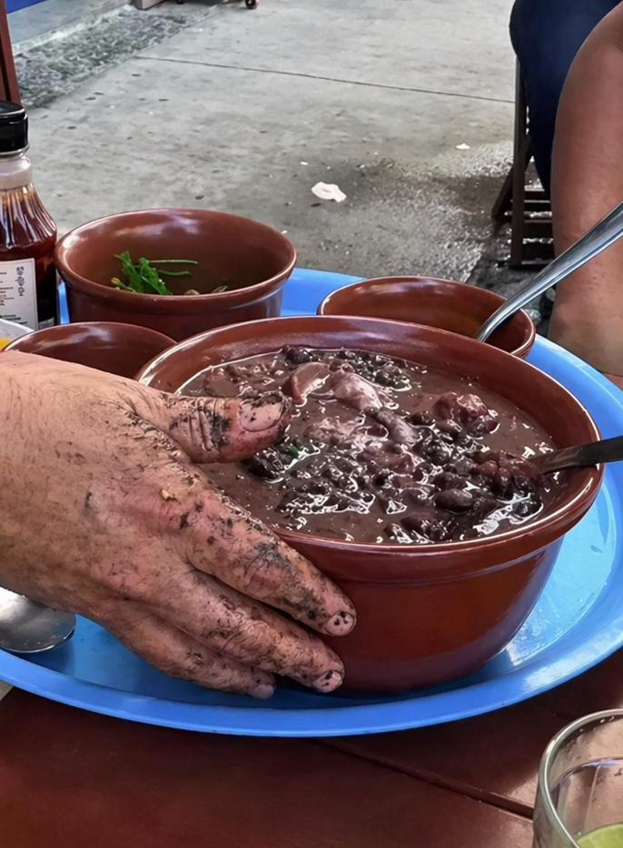
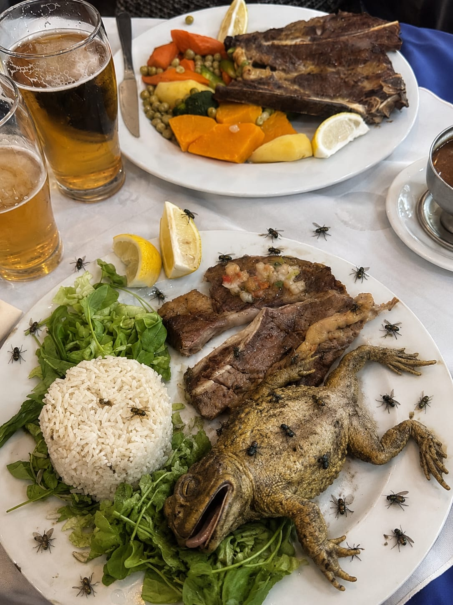

Hecho con amor y mucho sabor 🔥
↓ Ver cardápio ↓

El clásico de siempre, bien espeso y humeante. Con maíz blanco, zapallo, poroto, chorizo colorado y costilla de cerdo. Tal cual lo hacía la abuela.
Solo hoy disponible

Versión exclusiva con pierna de cordero desmenuzada, papas andinas, pimentón ahumado y un toque de ají molido. Cocinado a fuego lento durante 4 horas. Solo 10 porciones por día.
También está en el menú
Dale una oportunidad a estos olvidados 👇
Sin carne, pero con todo el sabor. Zapallo, quinoa real y muchas especias.
Para el que quiere probar sin comprometerse demasiado.
El de ayer, recalentado. Los que saben dicen que es mejor.